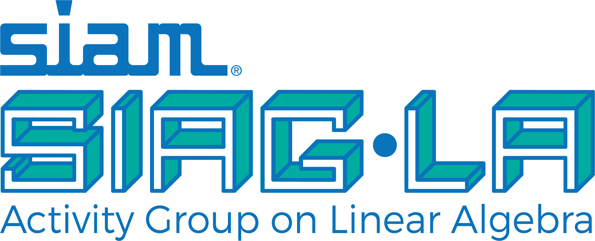

About us
The Society for Industrial and Applied Mathematics sponsors Activity Groups to provide a more focused forum for members interested in exploring one of the areas of applied mathematics, computational science, or applications. The SIAM Activity Group on Linear Algebra (SIAG/LA) promotes research in linear algebra and its applications. The group organizes conferences and supports smaller, less formal meetings as requested by the membership. Additionally, the group sponsors two prizes.
The Activity Group adheres to the SIAG/LA Rules of Procedure.
Current Officers
- Chair: Melina Freitag
- Vice Chair: Silvia Gazzola
- Program Director: Agnieszka Międlar
- Secretary: Arvind K. Saibaba
Web Prescence
The Activity Group uses the SIAM Engage forum for postings on conferences, jobs, and other content that is of interest to this community. Additionally, you can follow our Twitter feed at @siagla.